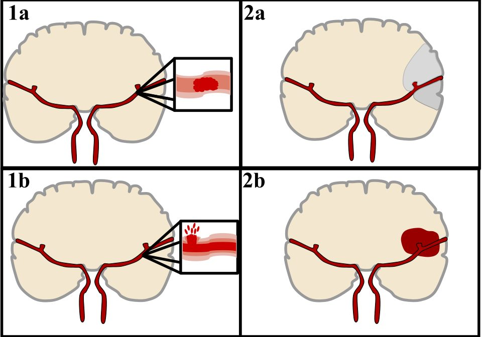

What a stroke unit is
A stroke unit is an area of the hospital dedicated to patients with stroke in the first days, with specialist neurology and nursing staff, continuous monitoring and shared protocols. It is not just a place: it is an organised way of providing care.
Being admitted to a stroke unit reduces death and dependency compared with a general ward, whatever the age, sex, type or severity of the stroke. According to the Cochrane review, for every 100 patients cared for in a stroke unit, about 2 more survive and about 3 more go home independent. It is one of the most effective measures in neurology, and the benefit lasts for years.
What is done there
- Continuous monitoring of heart rhythm, blood pressure, oxygen saturation, temperature and glucose for the first 48-72 hours.
- Frequent neurological observation with scales, to detect deterioration in time, for example a haemorrhage after thrombolysis or swelling.
- Blood pressure control: neither too high nor too low, depending on the type of stroke and the treatment received.
- Swallowing assessment before giving food, drink or medicines by mouth, to prevent aspiration pneumonia.
- Control of fever and glucose, which worsen the outlook (the QASC study showed that a nursing protocol for fever, glucose and swallowing reduces death and dependency).
- Early mobilisation and prevention of venous thrombosis with intermittent pneumatic compression.
- Investigation of the cause: echocardiogram, Doppler, rhythm monitoring to detect atrial fibrillation.
- Starting secondary prevention and rehabilitation.
- Information and training for the patient and family.
The stroke care network
Hospitals are organised into different levels:
| Type of centre | What it offers |
|---|---|
| Stroke centre (or stroke team) | Emergency care, CT, thrombolysis, sometimes via telestroke |
| Stroke unit | All of the above + a stroke unit with an on-call neurologist |
| Comprehensive or tertiary stroke centre | All of the above + thrombectomy 24 hours a day, neurosurgery and intensive care |
The stroke code decides which centre each patient goes to.
Telestroke
In district hospitals without an on-call neurologist, telestroke connects the emergency doctor by video link with a vascular neurologist at a reference hospital, who examines the patient remotely, reviews the CT and decides whether to give thrombolysis and whether the patient needs to be transferred for thrombectomy. It has allowed many patients in rural areas to be treated and has reduced differences between regions. Spain has telestroke networks in several regions, such as Catalonia, Castile and León, Galicia and Andalusia.
After the stroke unit
After a few days, the patient moves to a ward, a rehabilitation unit or home, with a plan for prevention, rehabilitation and follow-up. Early discharge planning, with the support of a social worker and coordination with primary care, improves recovery.
Recent guidelines and documents (2024-2026)
- Prabhakaran S, et al. 2026 Guideline for the Early Management of Patients With Acute Ischemic Stroke (AHA/ASA). Stroke. 2026. Link. US guideline on acute ischaemic stroke, replacing the 2018-2019 version.
- Spanish Ministry of Health. Estrategia en Ictus del Sistema Nacional de Salud (national stroke strategy). 2024 update. Link. Spain's national stroke strategy (in Spanish).
Sources
- Stroke Unit Trialists' Collaboration. Organised inpatient (stroke unit) care for stroke. Cochrane Database Syst Rev. 2020;4:CD000197. doi:10.1002/14651858.CD000197.pub4.
- Middleton S, et al. Implementation of evidence-based treatment protocols to manage fever, hyperglycaemia, and swallowing dysfunction in acute stroke (QASC). Lancet. 2011;378:1699-706.
- Waje-Andreassen U, et al. European Stroke Organisation certification of stroke units and stroke centres. Eur Stroke J. 2018;3:220-6.
- Spanish Ministry of Health. National Health System Stroke Strategy.
- Hubert GJ, et al. Telestroke networks: current status and future directions. Lancet Neurol. 2016;15:1222-4.